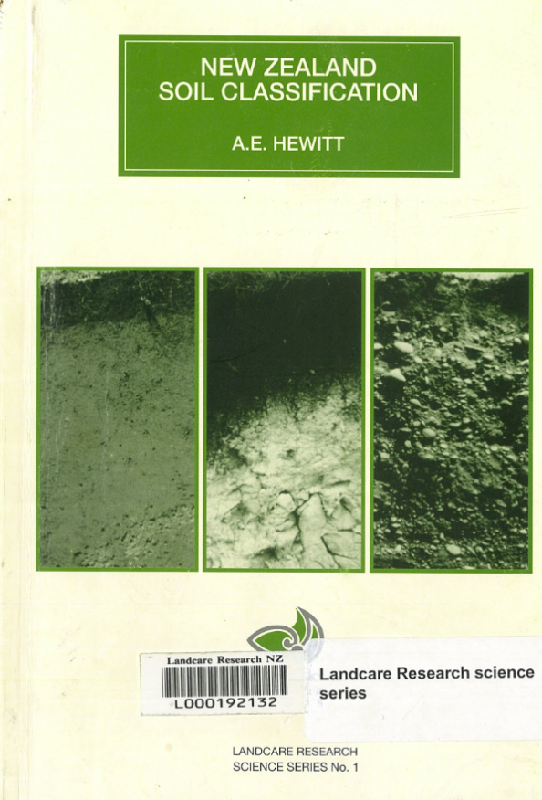

New Zealand Soil Classification v3.0

New Zealand Soil Classification
v 3.0
Manaaki Whenua - Landcare Research New Zealand Ltd
Landcare Research Science Series No. 1
First published as DSIR Land Resources Scientific Report No.19
Reprinted with corrections as Landcare Research Science Series No. 1, 1998.
This 3rd edition includes updates and corrections.
© Landcare Research New Zealand Ltd 2010
Welcome!
This is a Quarto version of the New Zealand Soil Classification (NZSC), 3rd edition.
Introductory information about the NZSC is available at The New Zealand Soils Portal.
The original publication can be downloaded from the Manaaki Whenua Digital Library.
Please cite this document as:
Hewitt, A.E., 2010. New Zealand soil classification (v. 3.0), 3rd ed, Landcare Research science series. Manaaki Whenua Press, Wellington, New Zealand. https://github.com/lauren-obrien/nzsc_v3
The intent of this project is to demonstrate the utility of the Quarto authoring format for interacting with the classification on electronic devices.
To raise an issue about the book’s content (e.g. code not running) or make a feature request, please use the issue tracker.